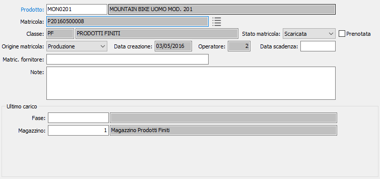
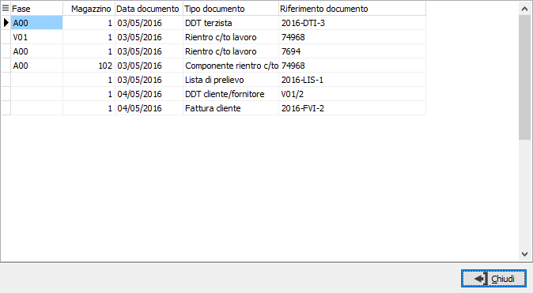
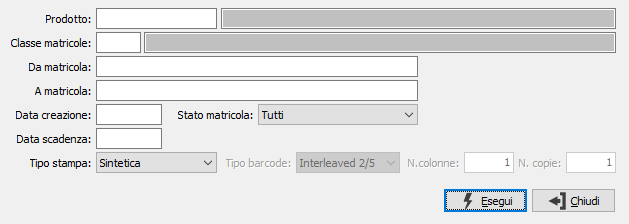

consente
una rapida analisi della movimentazione; viene riportata in una finestra
tutta la movimentazione della matricola.
consente
una rapida analisi della movimentazione; viene riportata in una finestra
tutta la movimentazione della matricola.Anagrafica matricole
L’anagrafica matricole consente l’inserimento, variazione e cancellazione delle singole matricole dei prodotti; la creazione della matricola è comunque regolata dalla classe presente sul prodotto. In anagrafica sono riportate, non modificabili, le informazioni relative alla creazione, allo stato, alla prenotazione ed all’ultimo carico della matricola; i dati dell'ultimo carico variano in base al tipo di prodotto, ad esempio se sono gestiti i lotti sarà presente anche il lotto di carico.
È presente un campo note ed un campo matricola del fornitore ad imputazione libera; la matricola del fornitore può essere utilizzata anche come criterio di ricerca nelle funzioni di Tracciabilità matricole ed Analisi movimenti matricole. La cancellazione è possibile solo se la matricola non è movimentata.

Per la matricola sono previsti tre stati che saranno anche indicati nelle varie finestre di selezione:
Creata (colore bianco): la matricola esiste ma non è stata movimentata (come ad esempio le matricole create dalla RDP o dalla procedura di servizio Generazione matricole).
In carico (colore verde): per la matricola è stato registrato il carico e quindi la matricola può essere scaricata.
Scaricata (colore bordeaux): la matricola è stata movimentata ma ha giacenza zero quindi non può più essere scaricata (al massimo può essere ricaricata nel caso di un reso da cliente).
Il pulsante consente
una rapida analisi della movimentazione; viene riportata in una finestra
tutta la movimentazione della matricola.

Dall'anagrafica è possibile effettuare la stampa i tasti funzione della toolbar.

La stampa può essere effettuata sintetica o analitica; è inoltre possibile da questa finestra effettuare la stampa delle etichette con barcode.